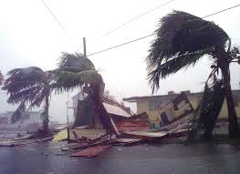

Effect of Cyclone
The main effects of tropical cyclones include heavy rain, strong wind, large storm surges near landfall, and tornadoes. The destruction from a tropical cyclone, such as a hurricane or tropical storm, depends mainly on its intensity, its size, and its location. Tropical cyclones act to remove forest canopy as well as change the landscape near coastal areas, by moving and reshaping sand dunes and causing extensive erosion along the coast. Even well inland, heavy rainfall can lead to mudslides and landslides in mountainous areas. Their effects can be sensed over time by studying the concentration of the Oxygen-18 isotope within caves within the vicinity of cyclones' paths. After the cyclone has passed, devastation often continues. Fallen trees can block roads and delay rescues, with medical supplies, or slow the repairs to electrical lines, telephone towers or water pipes, which could put other lives at risk for days or months. Standing water can cause the spread of disease, and transportation or communication infrastructure may have been destroyed, hampering clean-up and rescue efforts. Nearly two million people have died globally due to tropical cyclones. Despite their devastating effects, tropical cyclones are also beneficial, by potentially bringing rain to dry areas and moving heat from the tropics poleward. Out at sea, ships take advantage of their known characteristics by navigating through their weaker, western half. PST hazards. PST is an acronym standing for Primary, Secondary and Tertiary. A primary hazard involves destructive winds, debris and storm surge. Secondary hazards include flooding and fires. Tertiary hazards include spikes in prices of food and other necessities, as well as long term hazards like water-borne diseases.